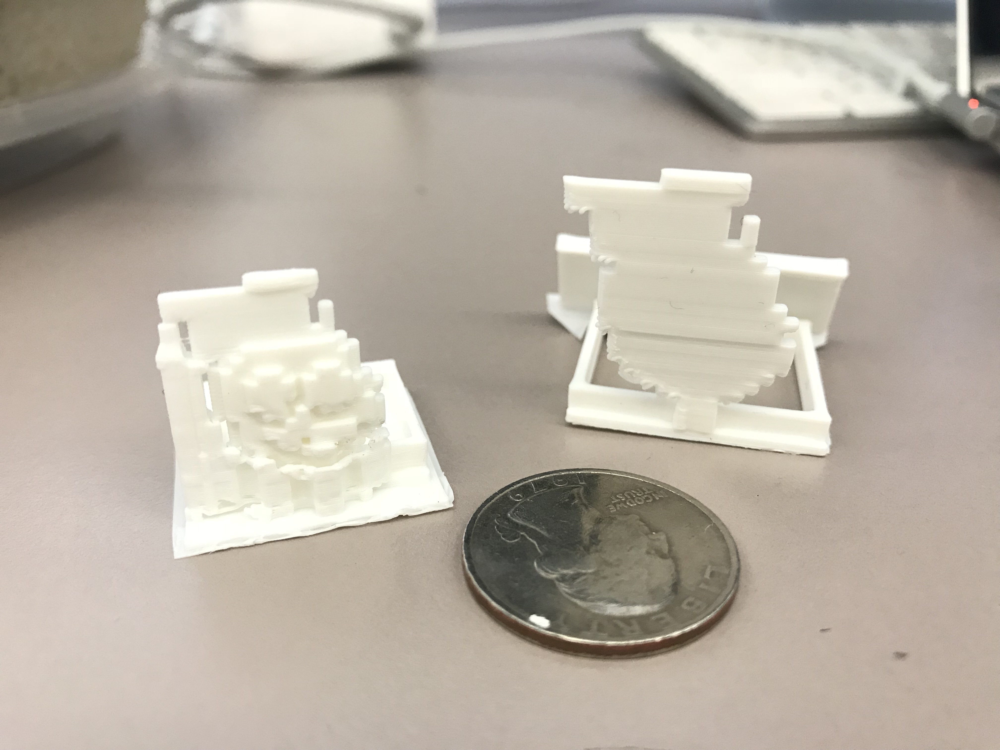

The object that I chose to re-create for my Minecraft Art was the Jollibee logo.
I used a 3D Machine to print this project. I did it twice, the first one did not show that much detail, while the other one was more structured and geometric.
It's one of the most famous Filipino logos that are known worldwide. This fast food restaurant has numerous locations around the world, and is known for their fried chicken.
